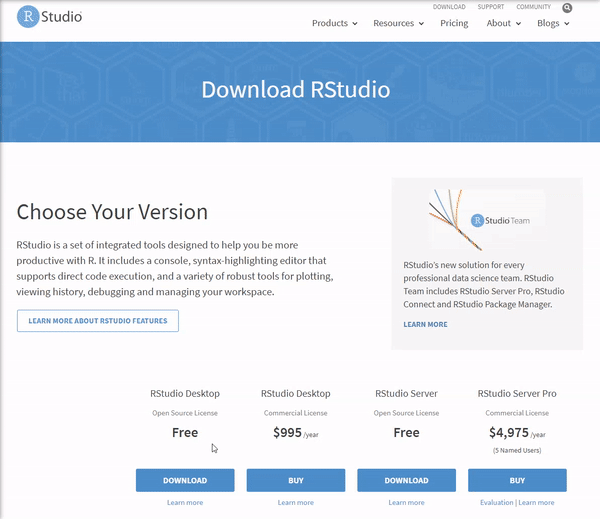
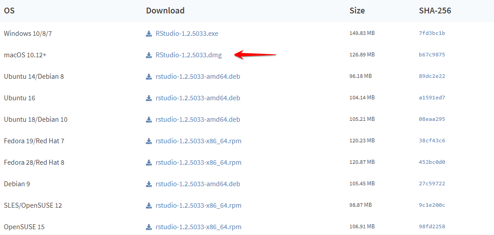
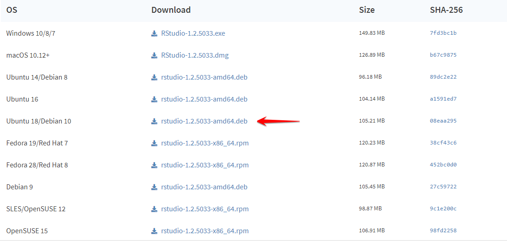
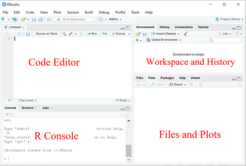

Chapter 2 Prerequisite
2.1 Installation
The installation instruction are based on CRAN’s instruction of R installation: https://cran.r-project.org/doc/manuals/r-patched/R-admin.html and DataCamp tutorial on “How to Install R on Windows, Mac OS X, and Ubuntu”: https://www.datacamp.com/community/tutorials/installing-R-windows-mac-ubuntu.
2.1.1 Windows
To Install R
- Open an internet browser and go to https://cran.r-project.org/.
- Click the “download R” link in the middle of the page under “Getting Started.”
- Select a CRAN location (a mirror site) and click the corresponding link.
- Click on the “Download R for Windows” link at the top of the page.
- Choose the “base” and then Click on the “Download R 4.1.0 for Windows” link at the top of the page.
- Once the download is finished, you will obtain a file named “R-4.1.0-win.exe” or similar depending on the version of R that you download.
- Most of the time, you will likely want to go with the defaults, so click the button ‘Next’ until the process is complete.
- Now that R is installed, you need to download and install RStudio.
To Install RStudio
- Go to www.rstudio.com and click on the “Download RStudio” button.
- Click on “Download RStudio Desktop.”
- The installation process is very straightforward as the gif below.

2.1.2 Mac OSX
To Install R
- Open an internet browser and go to www.r-project.org.
- Click the “download R” link in the middle of the page under “Getting Started.”
- Select a CRAN location (a mirror site) and click the corresponding link.
- Click on the “Download R for (Mac) OS X” link at the top of the page.
- Click on the file containing the latest version of R under “Files.”
- Save the
.pkgfile, double-click it to open, and follow the installation instructions. - Now that R is installed, you need to download and install RStudio.
To Install RStudio Very similar with Windows,
- Go to www.rstudio.com and click on the “Download RStudio” button.
- Click on “Download RStudio Desktop.”
- Click on the version recommended for your system, or the latest Mac version, save the
.dmgfile on your computer, double-click it to open, and then drag and drop it to your applications folder. 
2.1.3 Ubuntu
To Install R
As it is common, prior to installing R, let us update the system package index and upgrade all our installed packages using the following two commands:
sudo apt update
sudo apt -y upgradeAfter that, all that you have to do is run the following in the command line to install base R.
sudo apt -y install r-baseTo Install RStudio
Once base R is installed, you can go ahead and install RStudio. For that we are going to head over again to the RStudio downloads page and download the .deb file for our Ubuntu version as shown in the image below:

2.2 Use R inside RStudio
2.2.1 R studio
RStudio is very powerful for providing a a four pane work-spaces.
Top-left panel: Your scripts of the R codes, script is good to keep a record of your work and also convenient for command execution.
You can create a new script by:
File –> New –> R Script
Bottom-left panel: R console for R commands, where you actually run the R codes.
Top-right panel:
Workspace tab: All the data(more specifically, R objects) you have created in the Workspace and all previous commands you previously ran in the History.
Bottom-right panel:
Files in your working directory(you probably should also set your working directory) in Files, and the plots you have created in Plots.

2.2.2 Set working directory
- Create a folder named “R-workshop” in your preferred directory
- Create a “Data” folder in the “R-workshop”
- Download the data in the link https://drive.google.com/drive/folders/1RD6PY8IatnJ9ECcpAiCNZlc3KPBInGwo?usp=sharingused for this workshop and extract the data in the “Data” folder
- From RStudio, use the menu to change your working directory under
Session > Set Working Directory > Choose Directory - Choose the directory to “R-workshop”

Or you can type in the console:
setwd("/yourdirectory/R-workshop")For Windows, the command might look like :
setwd("c:/yourdirectory/R-workshop")2.2.3 Install packages
There are two packages used in this workshop, in the R console, type:
install.packages('ggplot2')
install.packages('gplots')